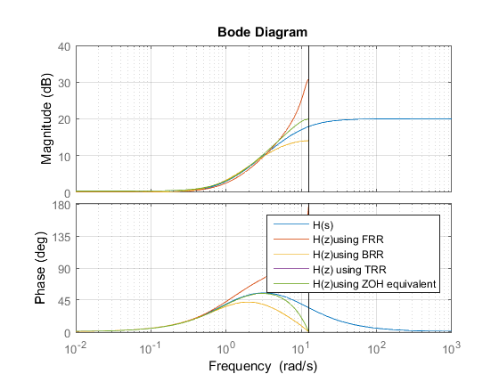
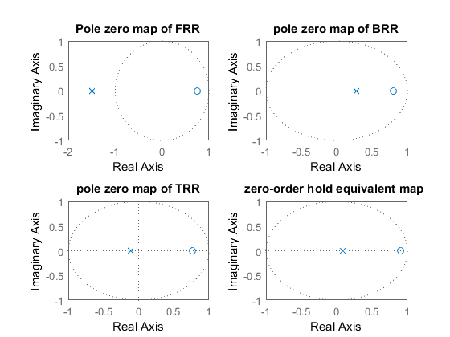

clc;clear;close all;
phaseValue=[];
fprintf('continuous time transfer fn H(s):')
sysContinuous=zpk(-1,-10,10)
[~,phase]=bode(sysContinuous,3);
fprintf('phase at w1=3 rad/sec:\n')
disp(phase)
phaseValue=[phaseValue phase];
figure(1)
hold on
bode(sysContinuous)
fprintf('discrete transfer function using forward rectangular rule:')
sysD_FRR=zpk([0.75],[-1.5],10,0.25)
bode(sysD_FRR)
legend('H(s)','H(z)using FRR')
[~,phase]=bode(sysD_FRR,3);
fprintf('\n Phase at w1=3 radians/second:\n')
disp(phase)
phaseValue=[phaseValue phase];
fprintf('Discrete transfer function using backward rectangular rule:')
sysD_BRR=zpk(0.8,0.28,3.57,0.25)
bode(sysD_BRR)
legend('H(s)','H(z) using FRR','H(z) using BRR')
[~,phase]=bode(sysD_BRR,3);
fprintf('\nPhase at w1=3 radians/second:\n')
disp(phase)
phaseValue=[phaseValue phase];
fprintf('Discrete transfer function using trapezoidal rule:')
sysD_Tustin=zpk(0.77,-0.11,5,0.25)
bode(sysD_Tustin)
legend('H(s)','H(z) using FRR','H(z) using BRR','H(z) using Tustin')
[~,phase]=bode(sysD_Tustin,3);
fprintf('\nPhase at w1=3 radians/second:\n')
disp(phase)
phaseValue=[phaseValue phase];
fprintf('Discrete transfer function using zero order hold:')
sysD_ZOH=c2d(sysContinuous,0.25,'zoh')
bode(sysD_Tustin)
legend('H(s)','H(z)using FRR','H(z)using BRR','H(z) using TRR','H(z)using ZOH equivalent')
[mag,phase]=bode(sysD_ZOH,3)
disp(phase)
phaseValue=[phaseValue phase];
grid on
hold off
fprintf('H(s) FRR BRR TRR\n')
fprintf('%5.2f,%5.2f,%5.2f,%5.2f,%5.2f\n',phaseValue)
figure(2)
subplot(2,2,1)
pzmap(sysD_FRR)
title('Pole zero map of FRR')
subplot(2,2,2)
pzmap(sysD_BRR)
title('pole zero map of BRR')
subplot(2,2,3)
pzmap(sysD_Tustin)
title('pole zero map of TRR')
subplot(2,2,4)
pzmap(sysD_ZOH)
title('zero-order hold equivalent map ')
continuous time transfer fn H(s):
sysContinuous =
10 (s+1)
--------
(s+10)
Continuous-time zero/pole/gain model.
phase at w1=3 rad/sec:
54.8658
discrete transfer function using forward rectangular rule:
sysD_FRR =
10 (z-0.75)
-----------
(z+1.5)
Sample time: 0.25 seconds
Discrete-time zero/pole/gain model.
Phase at w1=3 radians/second:
74.5542
Discrete transfer function using backward rectangular rule:
sysD_BRR =
3.57 (z-0.8)
------------
(z-0.28)
Sample time: 0.25 seconds
Discrete-time zero/pole/gain model.
Phase at w1=3 radians/second:
39.2533
Discrete transfer function using trapezoidal rule:
sysD_Tustin =
5 (z-0.77)
----------
(z+0.11)
Sample time: 0.25 seconds
Discrete-time zero/pole/gain model.
Phase at w1=3 radians/second:
54.2147
Discrete transfer function using zero order hold:
sysD_ZOH =
10 (z-0.9082)
-------------
(z-0.08208)
Sample time: 0.25 seconds
Discrete-time zero/pole/gain model.
mag =
7.4779
phase =
58.1401
58.1401
H(s) FRR BRR TRR
54.87,74.55,39.25,54.21,58.14
 